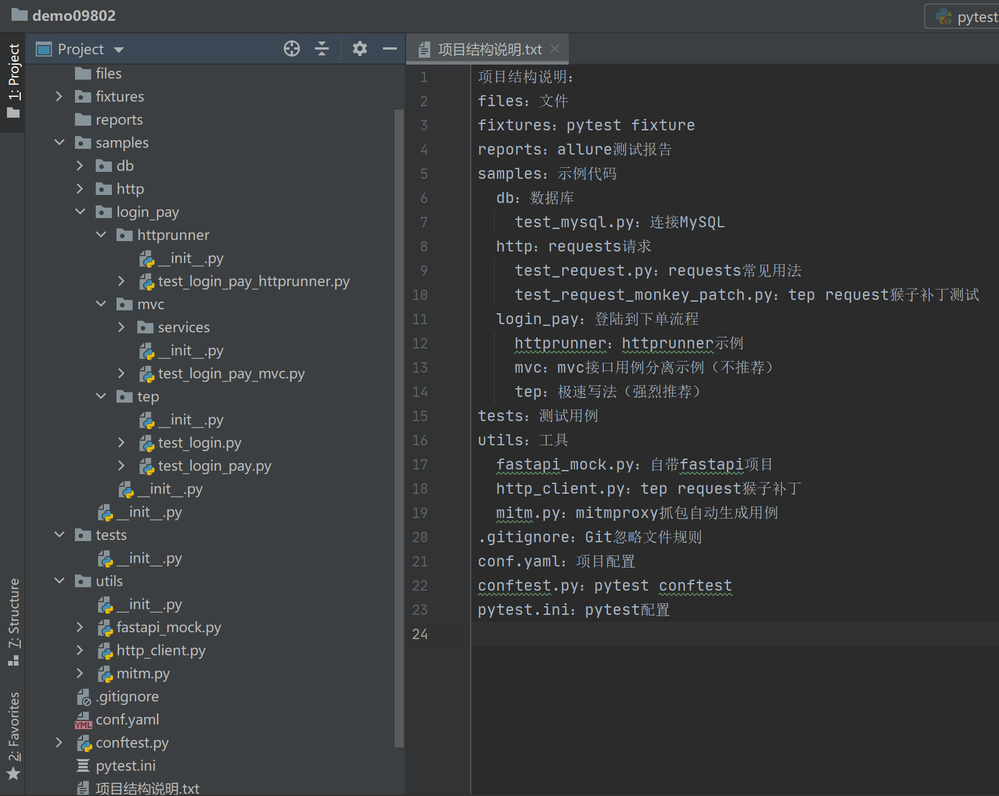
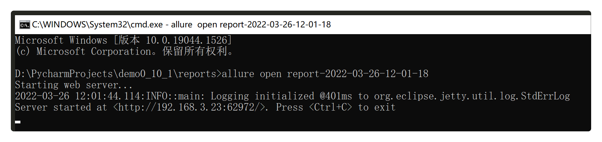
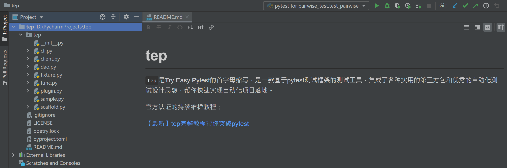

【最新】tep完整教程帮你突破pytest¶

tep是个小工具¶
tep是Try Easy
Pytest的首字母缩写，是一款基于pytest测试框架的测试工具，集成了各种实用的第三方包和优秀的自动化测试设计思想，帮你快速实现自动化项目落地。tep不是测试框架，只是一个小工具。在原理篇就能看出来，它所做的事情，就相当于胶水，把pytest相关的测试技术聚合在一起。假如您的公司想使用或推广tep，那么请不要说我们准备引入tep，而是应该说我们准备用pytest直接写Python代码来实现自动化。tep只是帮你做到这一步的小小工具。
快速入门¶
Python版本¶
支持Python3.7+版本，因为pytest7.1.1要求必须Python3.7+版本。
新建pytest项目¶
tep startproject demo

带上-venv参数，可创建Python虚拟环境，并在虚拟环境中安装tep：
tep startproject demo -venv

使用篇¶
用例集¶
在tests目录下将测试用例按功能模块分成多个用例集：
tests
user
user_main_process.py
user_validate.py
teacher
teacher_main_process.py
teacher_validate.py
student
student_main_process.py
student_validate.py
测试用例¶
用例的基本原则是用例解耦：每个.py文件都是单独的可运行的测试用例。每条测试用例尽量只包含一个test()函数。测试用例由测试标题和测试步骤组成。
测试步骤¶
测试步骤由描述、数据、请求、提取、断言5个部分组成：
## 描述
## 数据
## 请求
response = request(
"{method}",
url="{url}",
headers={headers},
{body_grammar}
)
## 提取
## var = response.jmespath("expression")
## 断言
assert response.status_code < 400
语法约定¶
强烈推荐直接编写Python代码。无需额外学习新语法，精通Python语言和Python库用法，让你的代码能力直线上升。tep没有做特殊封装，只做了语法约定。tep编写自动化脚本的方法，是一种追求效率的极速写法。
接口管理¶
接口写在用例步骤里，不用单独管理，不为了代码数据分离而分离。如果想单独管理，可以参考示例代码中的mvc写法，不推荐这种效率偏低的方式。
接口复用¶
接口复用的原则是逻辑相对简单，url+入参+出参，比较固定且重复使用次数很多。符合复用要求的接口可以做成fixture，供测试用例使用。参考fixtures/fixture_login.py脚本：
from tep.client import request
from tep.fixture import *
def _jwt_headers(token):
return {"Content-Type": "application/json", "authorization": f"Bearer {token}"}
@pytest.fixture(scope="session")
def login(env_vars):
# 封装登录接口
logger.info("Administrator login")
response = request(
"post",
url=env_vars.domain + "/login",
headers={"Content-Type": "application/json"},
json={
"username": "dongfanger",
"password": "123456",
}
)
assert response.status_code < 400
response_token = jmespath.search("token", response.json())
class Clazz:
token = response_token
jwt_headers = _jwt_headers(response_token)
return Clazz
返回值使用类包了一层，一是为了在写代码时会有语法智能补全，二是方便后续扩展，直接给类添加新的属性即可，不影响其他用例。
接口串联¶
得益于一个``.py``文件就是一条用例的约定。接口的串联就能通过变量进行实现，从上个接口响应中取值，存入变量，放到下个接口的入参中，轻松完成。
全局变量¶
env_vars是全局变量池，提供了put()和get()方法对变量进行动态存取。在fixtures/fixture_env_vars.py可以设置预设变量：
#!/usr/bin/python
## encoding=utf-8
from tep.dao import mysql_engine
from tep.fixture import *
@pytest.fixture(scope="session")
def env_vars(config):
class Clazz(TepVars):
env = config["env"]
"""变量定义开始"""
# 环境变量
mapping = {
"qa": { # qa环境
"domain": "http://127.0.0.1:5000", # 变量名:变量值
"mysql_engine": mysql_engine("127.0.0.1", # host
"2306", # port
"root", # username
"123456", # password
"qa"), # dbname
},
"release": { # release环境
"domain": "https://release.com", # 变量名:变量值
"mysql_engine": mysql_engine("127.0.0.1",
"2306",
"root",
"123456",
"release"),
}
# 继续添加
}
# 定义类属性，敲代码时会自动补全
domain = mapping[env]["domain"]
mysql_engine = mapping[env]["mysql_engine"]
"""变量定义结束"""
return Clazz()
局部变量¶
就像正常的Python变量一样使用，没有特殊的语法。
环境切换¶
在conf.yaml中可以切换运行环境：
env: qa
环境之间的差别体现在环境变量，环境变量也是在fixtures/fixture_env_vars.py中进行预设的。默认有qa和release2个环境。
断言¶
采用Python原生的assert断言。16种常用断言如下：
import allure
@allure.title("等于")
def test_assert_equal():
assert 1 == 1
@allure.title("不等于")
def test_assert_not_equal():
assert 1 != 2
@allure.title("大于")
def test_assert_greater_than():
assert 2 > 1
@allure.title("小于")
def test_assert_less_than():
assert 1 < 2
@allure.title("大于等于")
def test_assert_less_or_equals():
assert 2 >= 1
assert 2 >= 2
@allure.title("小于等于")
def test_assert_greater_or_equals():
assert 1 <= 2
assert 1 <= 1
@allure.title("长度相等")
def test_assert_length_equal():
assert len("abc") == len("123")
@allure.title("长度大于")
def test_assert_length_greater_than():
assert len("hello") > len("123")
@allure.title("长度小于")
def test_assert_length_less_than():
assert len("hi") < len("123")
@allure.title("长度大于等于")
def test_assert_length_greater_or_equals():
assert len("hello") >= len("123")
assert len("123") >= len("123")
@allure.title("长度小于等于")
def test_assert_length_less_or_equals():
assert len("123") <= len("hello")
assert len("123") <= len("123")
@allure.title("字符串相等")
def test_assert_string_equals():
assert "dongfanger" == "dongfanger"
@allure.title("以...开头")
def test_assert_startswith():
assert "dongfanger".startswith("don")
@allure.title("以...结尾")
def test_assert_startswith():
assert "dongfanger".endswith("er")
@allure.title("正则匹配")
def test_assert_regex_match():
import re
assert re.findall(r"don.*er", "dongfanger")
@allure.title("包含")
def test_assert_contains():
assert "fang" in "dongfanger"
assert 2 in [2, 3]
assert "x" in {"x": "y"}.keys()
@allure.title("类型匹配")
def test_assert_type_match():
assert isinstance(1, int)
assert isinstance(0.2, float)
assert isinstance(True, bool)
assert isinstance(3e+26j, complex)
assert isinstance("hi", str)
assert isinstance([1, 2], list)
assert isinstance((1, 2), tuple)
assert isinstance({"a", "b", "c"}, set)
assert isinstance({"x": 1}, dict)
测试报告¶
allure下载地址：https://github.com/allure-framework/allure2/releases
解压后将bin目录添加到系统环境变量Path。
在pytest命令行添加参数--tep-reports就能一键生成Allure测试报告，并且会把请求入参和响应出参，记录在测试报告中。
pytest --tep-reports
若想在资源管理器中打开，需要执行命令allure open 报告所在文件夹名才能正常打开。

这是因为allure必须启动server才能浏览，allure open启动的是自带的server，PyCharm右键也能直接启动server。
自定义日志¶
编辑utils/http_client.py对日志进行自定义，用例中引用新版本request：
from utils.http_client import request
参考示例samples/http/test_request_monkey_patch.py。
Pairwise算法生成功能用例¶
Pairwise算法能针对多条件组合用例，从笛卡尔积中，根据两两组合过滤，生成更为精简的测试用例。
输入3个条件：
‘M’, ‘O’, ‘P’
‘W’, ‘L’, ‘I’
‘C’, ‘E’
from tep.func import pairwise
def test_pairwise():
enum = [['M', 'O', 'P'], ['W', 'L', 'I'], ['C', 'E']]
result = pairwise(enum)
print(f"\npair total:{len(result)}")
for p in result:
print(p)
笛卡尔积有18种组合，经过Pairwise算法过滤后，只会保留9组用例：
cartesian product total:18
100% [■■■■■■■■■■]
pair total:9
('M', 'W', 'E')
('M', 'L', 'E')
('M', 'I', 'C')
('O', 'W', 'E')
('O', 'L', 'E')
('O', 'I', 'C')
('P', 'W', 'C')
('P', 'L', 'C')
('P', 'I', 'E')
录制流量生成自动化用例¶
①手动设置系统代理。
②命令行cd到utils目录下，在mitm.py中设置过滤域名。
③mitmdump -s mitm.py开始录制。
用例会自动生成到tests/mitm文件夹下。
原理篇¶
代码是最好的文档：
https://github.com/dongfanger/tep
//TODO完善代码注释

pypi库¶
tep可以通过pip直接安装，这是因为源码上传到了pypi官方库。上传借助了poetry来实现：
poetry install --no-dev
poetry build
poetry publish
执行这3条命令，然后输入pypi注册的用户名和密码即可。
项目脚手架¶
tep能从系统命令行来调用，也是借助poetry来实现的：
## pyproject.toml
[tool.poetry.scripts]
tep = "tep.cli:main"
这相当于注册了系统命令，调用后会执行tep.cli:main函数：
import argparse
import sys
from tep import __description__, __version__
from tep.scaffold import init_parser_scaffold, main_scaffold
def main():
"""Parse command line options and run commands.
"""
parser = argparse.ArgumentParser(description=__description__)
parser.add_argument(
"-V", "--version", dest="version", action="store_true", help="show version"
)
subparsers = parser.add_subparsers(help="sub-command help")
sub_parser_scaffold = init_parser_scaffold(subparsers)
if len(sys.argv) == 1:
# tep
parser.print_help()
sys.exit(0)
elif len(sys.argv) == 2:
# print help for sub-commands
if sys.argv[1] in ["-V", "--version"]:
# tep -V
print(f"{__version__}")
elif sys.argv[1] in ["-h", "--help"]:
# tep -h
parser.print_help()
elif sys.argv[1] == "startproject":
# tep startproject
sub_parser_scaffold.print_help()
sys.exit(0)
args = parser.parse_args()
if args.version:
print(f"{__version__}")
sys.exit(0)
if sys.argv[1] == "startproject":
main_scaffold(args)
startproject会调用main_scaffold函数，这里面的逻辑很简单，就是创建文件夹和文件，文件内容是已经写好的样板代码。
变量池¶
变量池是在tep/fixture.py中实现的：
class TepVars:
def __init__(self):
self.vars_ = {}
def put(self, key, value):
self.vars_[key] = value
def get(self, key):
value = ""
try:
value = self.vars_[key]
except KeyError:
logger.error(f"env_vars doesnt have this key: {key}")
return value
它就是一个具有get和put方法的类，变量存在self.vars_这个全局字典中，所有脚本共享同一个变量池。
环境变量¶
环境配置是通过config来读取的：
@pytest.fixture(scope="session")
def config():
config_path = os.path.join(Project.dir, "conf.yaml")
with open(config_path, "r", encoding="utf-8") as f:
conf = yaml.load(f.read(), Loader=yaml.FullLoader)
return conf
它是个fixture，会在fixtures/fixture_env_vars.py中引用到：
@pytest.fixture(scope="session")
def env_vars(config):
class Clazz(TepVars):
env = config["env"]
这样就能设置环境变量了。
fixture自动导入¶
在conftest.py中，进行了fixture自动导入：
## 自动导入fixtures
_fixtures_dir = os.path.join(_project_dir, "fixtures")
_fixtures_paths = []
for root, _, files in os.walk(_fixtures_dir):
for file in files:
if file.startswith("fixture_") and file.endswith(".py"):
full_path = os.path.join(root, file)
import_path = full_path.replace(_fixtures_dir, "").replace("\\", ".").replace("/", ".").replace(".py", "")
_fixtures_paths.append("fixtures" + import_path)
pytest_plugins = _fixtures_paths
它会扫描fixtures目录下所有以fixture_开头和.py结尾的文件，然后以pytest_plugins形式添加到运行环境中。
requests猴子补丁¶
requests借助于装饰器打了猴子补丁，tep/client.py：
def tep_request_monkey_patch(req, *args, **kwargs):
start = time.process_time()
response = req(*args, **kwargs)
end = time.process_time()
elapsed = str(decimal.Decimal("%.3f" % float(end - start))) + "s"
log4a = "{}{} status:{} response:{} elapsed:{}"
try:
kv = ""
for k, v in kwargs.items():
# if not json, str()
try:
v = json.dumps(v, ensure_ascii=False)
except TypeError:
v = str(v)
kv += f" {k}:{v} "
args = list(args)
args += ["", ""]
method, url, *t = args
method_url = ""
if method:
method_url = f'method:"{method}" '
if url:
method_url += f'\nurl:"{url}" '
request_response = log4a.format(method_url, kv, response.status_code, response.text, elapsed)
logger.info(request_response)
allure.attach(request_response, f'request & response', allure.attachment_type.TEXT)
except AttributeError:
logger.error("request failed")
except TypeError:
logger.warning(log4a)
return TepResponse(response)
def request_wrapper(req):
def send(*args, **kwargs):
return tep_request_monkey_patch(req, *args, **kwargs)
return send
@request_wrapper
def request(method, url, **kwargs):
# 这是reqeusts原生方法
没有对requests做任何改动，只加了日志和报告内容。
一键生成Allure测试报告¶
--tep-reports是通过pytest plugin来实现的：
#!/usr/bin/python
## encoding=utf-8
import os
import shutil
import tempfile
import allure_commons
from allure_commons.logger import AllureFileLogger
from allure_pytest.listener import AllureListener
from allure_pytest.plugin import cleanup_factory
from tep.fixture import Project
from tep.func import current_time
allure_temp = tempfile.mkdtemp()
class Plugin:
@staticmethod
def pytest_addoption(parser):
parser.addoption(
"--tep-reports",
action="store_const",
const=True,
help="Create tep allure HTML reports."
)
@staticmethod
def _tep_reports(config):
if config.getoption("--tep-reports") and not config.getoption("allure_report_dir"):
return True
else:
return False
@staticmethod
def pytest_configure(config):
if Plugin._tep_reports(config):
test_listener = AllureListener(config)
config.pluginmanager.register(test_listener)
allure_commons.plugin_manager.register(test_listener)
config.add_cleanup(cleanup_factory(test_listener))
clean = config.option.clean_alluredir
file_logger = AllureFileLogger(allure_temp, clean)
allure_commons.plugin_manager.register(file_logger)
config.add_cleanup(cleanup_factory(file_logger))
@staticmethod
def pytest_sessionfinish(session):
if Plugin._tep_reports(session.config):
reports_dir = os.path.join(Project.dir, "reports")
new_report = os.path.join(reports_dir, "report-" + current_time().replace(":", "-").replace(" ", "-"))
if os.path.exists(reports_dir):
his_reports = os.listdir(reports_dir)
if his_reports:
latest_report_history = os.path.join(reports_dir, his_reports[-1], "history")
shutil.copytree(latest_report_history, os.path.join(allure_temp, "history"))
os.system(f"allure generate {allure_temp} -o {new_report} --clean")
shutil.rmtree(allure_temp)
通过pytest_sessionfinish钩子函数，在pytest运行结束时，生成测试报告。同时会把历史数据保留下来，以在Allure报告的趋势图中进行展示。
//TODO其他原理慢慢更新，欢迎提出疑问，不断补充。
附录¶
tep相比于pytest优势¶
【项目创建】
项目脚手架快速创建自动化项目；
良好的项目结构设计；
【上手简单】
遵循Python原生语法，没有额外负担；
提供丰富的接口自动化实践示例；
【优雅集成】
保留requests库用法，采用猴子补丁动态输出日志；
pytest命令行参数一键生成Allure测试报告；
【平台支持】
teprunner测试平台在线管理pytest脚本；
支持Git一键同步至平台；
tep测试平台化思路¶
teprunner是基于tep的测试平台。
从测试工具转变到测试平台，最重要是要想清楚用例的运行流程。从前端录入用例信息后，通过后端保存到数据库，再把数据组装出来，变成可执行的文件。teprunner的做法是，把pytest作为引擎，用例全部转化为文件，然后使用pytest命令运行用例。
用例解耦是实现平台化的关键原则。tep是按照一个.py文件一条用例的约定来编写脚本的，使得每个文件都是独立的可运行的。这就能很好的对应到，前端测试用例的增删改查。假如用例没有解耦，Python文件之间存在非常多的依赖，那么想做成Web平台是很困难的，在界面上根本无法操作。
项目脚手架为平台化提供了非常大的便利。在测试平台创建项目时，就会调用tep startproject创建一个项目脚手架，相当于给脚本运行初始化了一套隔离的运行环境，项目的用例之间互不干扰。
至于fixtures、环境变量等功能，如果做好了分层设计，这些都是水到渠成的事了。在做平台之前，只是为了多人协作方便，把conftest里面的fixture抽了出来，但是在平台化时，抽出来的fixtures正好可以做成一个单独的功能点。环境变量也是在做平台之前，只是想用yaml来管理配置，但是在平台化时，正好可以用来在前端切换环境，结合fixture_env_vars.py做成环境变量的功能。
找准测试平台定位才能游刃有余。测试平台只是一个壳子，做成什么样的平台，取决于对平台的定位，以及技术实现的能力。正是因为没有大牛的技术，无法做成大而全的测试平台，teprunner测试平台的才定位于pytest脚本在线管理平台。这对于tep来说，恰好是刚刚好的选择。